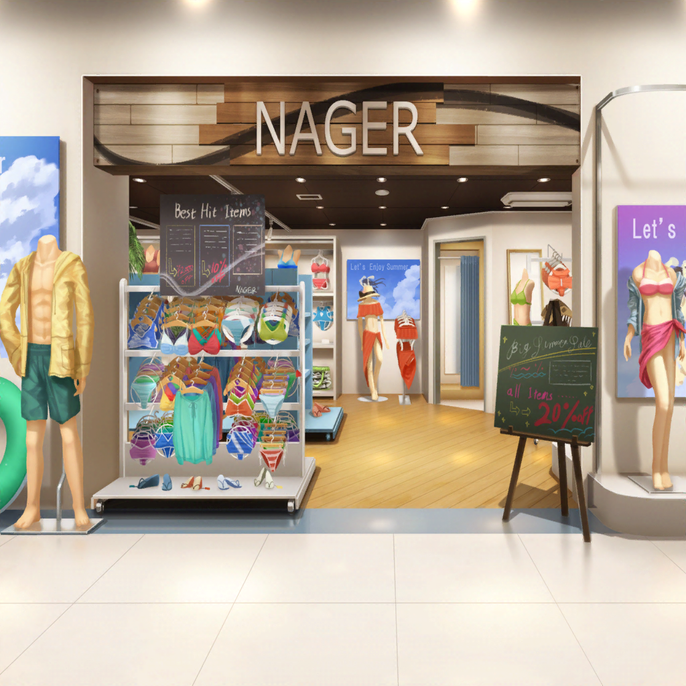

トコナッツパーク
燐子
思ってたより人がたくさん……
とても……賑やかなところですね……
紗夜
今日は特に暑いから……
みんな、考えることは同じみたいね
あこ
うーん、プール気持ち良さそう〜！
早く着替えて中に入ろうよ〜！
リサ
そうだね、じゃあ水着に着替えに行こっか。
更衣室はえっと……
友希那
……もしかして水着がいるの？
リサ・紗夜・あこ・燐子
え！？
リサ
いるのって……
ここ、そういうテーマパークだよ？
あこ
ウォーターアトラクションがたくさんあるって
言ったと思うんですけど……
友希那
そういえば、言っていたかもしれないわね。
よく聞いてなかったわ
燐子
でも、水着がないと……
紗夜
私としたことが……
湊さんがこういった場所に不慣れなことは
わかっていたのだから、配慮するべきでした。すみません
友希那
水着は持ってきていないけれど、気にしないで。
水着になるのは元々苦手だし、濡れないところで見ているわ
リサ
いやいや、せっかく来たんだから、友希那も泳ごうよ！
あこ
ここのアトラクション、ほとんど水着じゃないと乗れませんよ〜！
友希那
そう言われても、水着は持ってきていないのだし……
紗夜
パンフレットによると、
水着はパーク内のショップで購入できるようです。
まずはそこに向かいましょうか
リサ
おっ、さすが紗夜。
そういうことだから、心配しなくていいよ、友希那♪
友希那
だ、だから水着は苦手だって……
あこ
ほらほら、こっちですよ！ 早く早く〜！
友希那
！ ちょっと待って……！

トコナッツパーク 水着ショップ
燐子
水着……思ってたより、品揃えがたくさんありますね……
あこ
友希那さんにはどんな水着がいいかなー？
あ、こっちのやつとかどうかな、りんりん！
友希那
……ホントに水着にならないといけないの？
リサ
もー、友希那ってばまだ言ってるー
紗夜
往生際が悪いですよ。
ここに来ることに賛成したのはあなたでしょう
友希那
……わかったわ。
じゃあ、これで……
リサ
そんな適当に決めなくっても……
せっかくなんだからちゃんと選ぼうよ
あこ
そういえば、前にリサ姉と水着買いに行った時、
友希那さんに似合う水着見つけたよねっ！
リサ
あー、あの黒いホルターネックのやつかぁ。
あれ、ホント友希那に似合いそうだったね
あこ
似たようなのあるかな〜あっ！ これ似てるかも！
燐子
大人っぽい水着だね……
友希那さんに似合いそう……
リサ
へぇ〜、いいじゃん！
どう、友希那？
友希那
どうって言われても……
あこ
やっぱり友希那さん、クールだし、カッコいいし！
こういうのがいいと思います！
紗夜
……私は賛同しかねるわ
リサ
えっ、ダメかな？ なんで？
紗夜
この水着は大胆すぎると思うわ。
高校生は高校生らしく控えめなものを選ぶべきよ
紗夜
たとえば、これなんてどうかしら？
色もデザインも落ち着いていていいと思うのだけど……
リサ
こ、これ？ なんか授業で使うやつみたいだけど……？
あこ
学校じゃないんだし、これじゃ地味すぎて面白くないですよ〜！
紗夜
面白い面白くないで選ぶものじゃないでしょう。
高校生に相応しいもので機能性があるものにするべきだわ
リサ
うーん、友希那はどっちがいい？
友希那
（なんでもいいのだけれど……）
あこ・紗夜・リサ
じぃ〜〜〜〜……
友希那
（どっちを選んでも、誰かが気を悪くしそうな気がする……）
燐子
あ、あの……この水着は……どうでしょうか……？
燐子
今井さんとあこちゃんの……クールなイメージもあるけど……
デザインは落ち着いていて……悪目立ちはしないと思います……
あこ
わあ！ あこが見つけたのもカッコいいけど、
りんりんのやつもすっごくクールだよ〜！
紗夜
確かに華美な水着ではないようね。
これなら異論はありません
友希那
みんな納得したみたいね……
それじゃあ、これにするわ
友希那
……ありがとう。
いい水着を選んでくれて助かったわ
燐子
い、いえ……
友希那さんが気に入ってくれたなら良かったです……